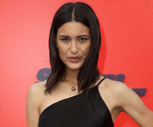
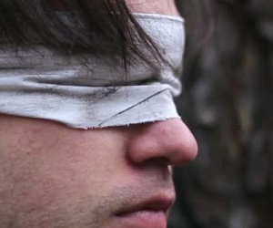
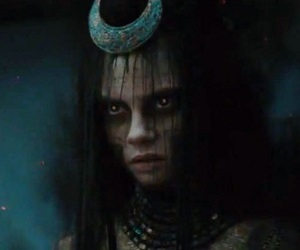

Avery
- Name: Avery Powell
- Deedname/Shadowname: "Are you serious?!"
- Apparent Age: Somewhere between 20 and 60
- Breed: Mage
- Tribe/Tradition: NWO - The Feed
- Auspice/Faction: Technocracy
- Visible Merits/Flaws: Burning Aura, Cloak of Seasons, Representative to the Five for Cloud Room.
- General Disposition and/or Description: The world can and will be a better place. You have long believed that the Union is the way forward to a better tomorrow. Unfortunately, you’ve been seeing increasing evidence that there is something truly rotten at the core of the Union. Especially now that tighter control from above and a more hostile “with us or against us” mentality growing within the Union, you’re not surprised that defections are also increasing. If not for Carla and your last glimmers of hope...
Brian
- Name: Brian Mitchell
- Deedname/Shadowname: N/A
- Apparent Age: Early 30s
- Breed: Mage
- Tribe/Tradition: Syndicate
- Auspice/Faction: Technocracy
- Visible Merits/Flaws: Former CEO of the Cloud Room Construct (briefly)
- General Disposition and/or Description: On the surface you are always calm, cool, and charismatic. Nothing breaks your winning smile. Under the smile and behind closed doors however, you’re a selfish and tempestuous monster. Self-obsessed and all about building up your power base, you exist for your own purpose above all others. The Union has been a useful framework within which to grow, so it has your loyalty for now. Ultimately however, you’d sell out the Union (or your own mother) if it suited your purposes.
Carla

- Name: Carla Verde
- Deedname/Shadowname: N/A
- Apparent Age: Mid 30s
- Breed: Mage
- Tribe/Tradition: Syndicate
- Auspice/Faction: Technocracy
- Visible Merits/Flaws: Current CEO of the Cloud Room Construct
- General Disposition and/or Description: Your people may have been screwed over by history, there’s no denying that, but you’re certain that if they had been more open to adapting and updating their ways than history would have played out differently. The deck may be stacked against the “little guy” but if one knows the rules of the game… Well, then you can play to win. You’ve been playing the game for decades and you’ve gotten damned good at it too. Now you’re making your move to take the top spot in Vegas’s Technocratic world and only that slimeball Mitchell stands in your way. You don’t much care for the politics of the Awakened, but you see an opportunity if you can spin the Council in your favor. Now if only you knew how to do that...
Lino

- Name: Lino
- Deedname/Shadowname: unknown
- Apparent Age: Mid 30s
- Breed: Mage
- Tribe/Tradition: unknown
- Auspice/Faction: unknown
- Visible Merits/Flaws: Blind
- General Disposition and/or Description: An otherwise unassuming blind man who sells books. He started a stall on Block 16 recently to "clean out" his collection of duplicates and books which do not suit his interests any longer.
Adaliah

- Name: Adaliah
- Deedname/Shadowname: unknown
- Apparent Age: Mid 30s
- Breed: Mage
- Tribe/Tradition: unknown
- Auspice/Faction: Nephandi
- Visible Merits/Flaws: Jhor
- General Disposition and/or Description: Adaliah would actually be quite attractive individual if she bothered to keep up with her appearance. With her olive colored skin, straight brown hair, and her chocolate brown eyes, she would the epitome of Mediterranean beauty. Unfortunately, she is often covered in some form of viscera and even when she is not she is clearly unwashed. She dresses intentionally to be both intimidating and utterly unreal. When using her magic, her eyes glow with sinister looking embers.